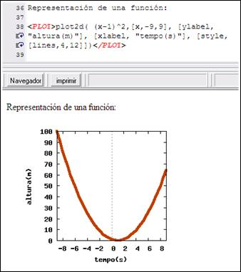

Uso:
<PLOT> Expresión Maxima simple conteniendo una instrucción que genere un archivo de imagen</PLOT>
Dicha expresión puede ser por ejemplo plot2d (para representar funciones) o draw2d (para vectores y otros objetos gráficos)
La etiqueta PLOT, al ser procesada, produce una etiqueta IMG. Las imágenes generadas son almacenadas dentro del directorio del documento actual con un nombre aleatorio que comienza por img y con extensión png.
Ejemplos:
Vectores:
<PLOT>draw2d(grid=true,xrange = [-5,8], yrange = [-7,8], pic_width=320, pic_height=200, head_length = 0.5, head_type = 'empty, label_alignment=right, points([A,B]), vector(A,B-A), vector([0,0],B-A), label(append(["A"],A-2*inc)), label(append(["B"],B+inc)), label(append(["AB"],(A+B)/2+inc)), label_alignment=left, label(append(["u"],C/2+inc)) )</PLOT>
Funciones:
<PLOT>plot2d( (x-1)^2,[x,-9,9], [ylabel, "altura(m)"], [xlabel, "tempo(s)"], [style,[lines,4,12]])</PLOT>

Atajo: CONTROL + P
Información adicional:
Consultar utilización del comando Maxima plot2d, plot3d, draw2d, draw3d y parametric_surface.
[5.13.0\doc\chm\es\maxima.chm::/maxima_48.html]
Para configurar otras opciones consultar la documentación Maxima (ver set_plot_option).
<HIDE>set_plot_option([gnuplot_preamble, "set size ratio 1;set size 0.3,0.3; set zeroaxis; set xtics ('0' 0); set ytics ('0' 0)"])</HIDE>
Created with the Personal Edition of HelpNDoc: Free EPub producer